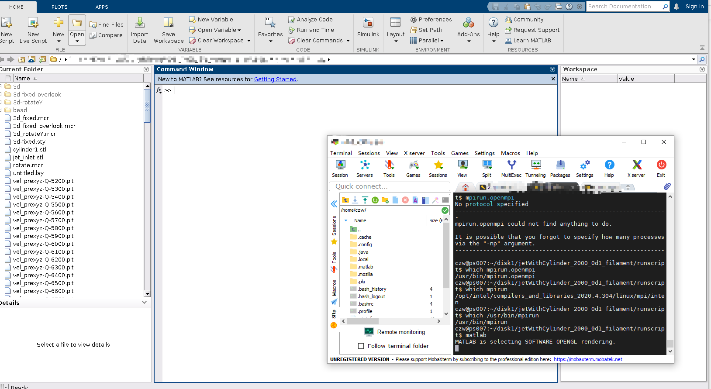
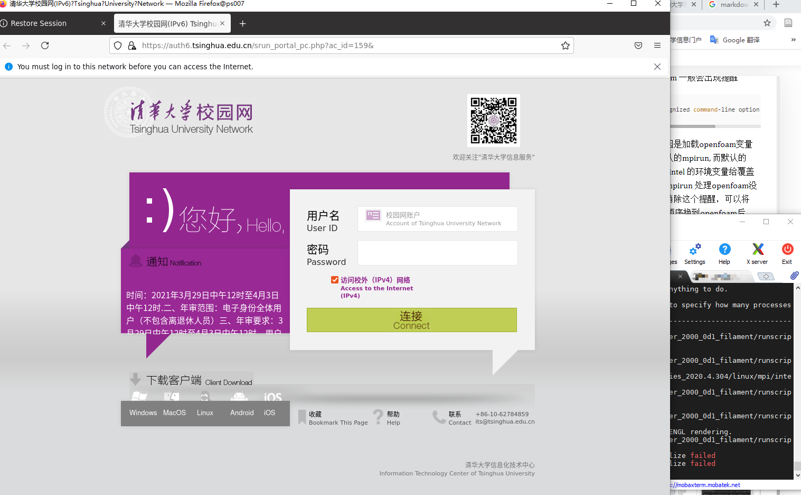
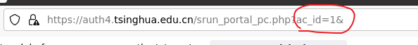
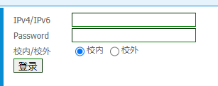

Ubuntu 安装与配置¶
安装¶
如果已经安装了合适的 Ubuntu 版本，请忽略
下载合适的 Ubuntu 系统镜像， 我们选用 Ubuntu 20.04 LTS Desktop，可以从清华开源镜像网站(https://mirrors.tuna.tsinghua.edu.cn/#iso-download)下载.
准备一个空白 U 盘，制作启动盘，这里推荐使用rufus(https://rufus.ie/zh/),按照官网傻瓜式一键制作
将 U 盘插入工作站，在开机启动页面时，进入 BIOS. 不同主板进入 BIOS 界面的快捷键不同，一般开机页面会有提示。进入 BIOS 后，把 U 盘的启动顺序放到第一位，即可。保存修改，退出。
系统将进入 U 盘内的文件，可以进入 Ubuntu 的安装界面
根据指引，选择安装 Ubuntu, 在选择语言方面，默认应该是英语，也可以选中文。这个在系统安装完后，可以更改。选择中文与英文本质上没有差别，就是选择中文的话个人目录下的目录是中文的，另外可能在有些情况会出现乱码。为了省事，可以直接选择英语（英语版本默认的拼音输入法不能用，有时候查一些资料麻烦）。不过在这里介绍选择简体中文安装的情况，后续会介绍如何在系统安装完后切换成英文目录
进入更新与其他软件，选择最小安装（工作站用不上影音游戏办公这种累赘的软件，保留基本功能即可），取消安装 Ubuntu 时下载更新。
安装类型，如果检测到已经安装了 Ubuntu 系统，会有保留原系统、重装原系统、清除整个磁盘并安装当前版本系统以及其他选项（根据回忆）。因为是新机器，且工作站的系统盘是一块独立的盘，我选择了清除整个磁盘并安装当前版本系统。后面应该会让选择系统盘是哪一个，选择好了就进行下一步安装。
您在什么地方 ：时区选择Shanghai。
您是谁： 设置账户密码，以及计算机名，都用英文，同时建议密码不要与用户名一致（这里建立的是 sudo 用户组账户，如果密码设置太简单，容易被黑客攻击，实验室的一些工作站就有血淋淋的教训），默认登录时需要密码。
静静等待安装完毕。在安装结束时，屏幕会提示拔出 U 盘后，输入回车键。等待进入桌面。
配置要求¶
进入系统的第一件事情就是连网，换 apt 源。如果在学校里面，就连校园网，最好把 ipv4 与 ipv6 都连上。
换 apt 源：系统默认 Ubuntu 的源（在国外），一般比较慢，甚至连不上。这里我们换成 清华 tuna 源：https://mirrors.tuna.tsinghua.edu.cn/help/ubuntu/(选择对应版本的源，然后复制下来)。本教程只讲清华源，其他阿里云什么的请百度，但配置流程一样。以下操作均要使用 sudo 操作
先备份原来的 apt 源，
sudo cp /etc/apt/sources.list /etc/apt/source.list.bak
打开源文件，清空文件内容
sudo vi /etc/apt/sources.list
清除原来文件中的内容，在命令形式，依次执行 gg(将光标至文件首行)，dG,清空内容。另外一个比较笨的方法，就是 dd(删除行)一行行删除即可。
执行 i 或者 a(进行插入命令，进入编辑模式)，复制清华源内容即可，ESC 退出编辑模式。执行：wq(保存退出，冒号是必须加的)
更新源(只用 update, 而 upgrade 慎用，有可能导致系统图形界面奔溃)
sudo apt update
如果工作站是放机房，想回工位通过 ssh 远程登录慢慢安装，请先安装 openssh-server, 并启动。
安装 openssh-server
sudo apt install openssh-server
安装完成后，ssh 会自启动，检测是否运行：
sudo systemctl status ssh
会输出
● ssh.service - OpenBSD Secure Shell server
Loaded: loaded (/lib/systemd/system/ssh.service; enabled; vendor preset: enabled)
Active: active (running) since Sun 2021-07-04 09:49:37 CST; 1 weeks 6 days ago
...
说明正常运行，并且开机自启动.执行 q 返回命令行。
Ubuntu 自带一个配置防火墙配置工具，称为 UFW。请确保打开了 SSH 端口：
sudo ufw allow ssh
本机的 ip 地址查询,找到 ipv4 地址就可以了
ip a
这个时候可以检测一下远程是否可以，windows 用 putty, ubuntu 直接用 ssh. 然后就可以快乐滴回工位慢慢配置。
通过 apt 自动安装软件(实验室机器默认安装的软件)，不同软件用空格隔开
sudo apt install gcc g++ gfortran gdb gcc-10 g++-10 gfortran-10
sudo apt install lcov cmake make git tldr htop
sudo apt install paraview python3-paraview clang vim
手动安装的软件
可自行安装软件 Intel PSXE 2020 Update 4, MATLAB 2020b, Tecplot 360ex 2020 等 所有软件安装在/opt 目录下 (清华湍流实验室的同学，安装包见实验室自建的 nas software 目录)，用户配置
建议不要使用 root 用户，ubuntu 自动隐藏 root 用户。设置管理员账户。同时实验室内不同的同学最好使用自己的账户，不同账户使用自己的环境变量。
新建 students 用户组，之后给每个人建立以姓名缩写为用户名和密码的用户
建立用户组：
sudo groupadd students
新建用户,<username> 请替换成用户名，比如 abc：
sudo useradd -s /bin/bash -d /home/<username> -m -G students <username>
修改新用户密码,<username> 请替换成用户名，比如 abc：
sudo passwd <username>
敦促新用户修改密码，防止黑客攻击
只要黑客登入系统，可以通过一些办法得知管理员的账户，进而通过一些手段拿到管理权限，从而劫持电脑
NAS 配置
仅限湍流实验室可以配置，可以自己参考已有机器的/etc/fstab 文件，其他浏览者请忽略硬盘配置
根据挂载盘的多少，可以在/mnt 下建立 disk1, disk2, …文件夹，修改/etc/fstab 进行自动挂载 /etc/fstab 添加行：（以挂载/dev/sda1 为例）
UUID=643003f8-88b3-48d0-bba7-926a334276bd /mnt/disk1 auto nosuid,nodev,nofail,x-gvfs-show 0 0
查询 UUID 方法：
sudo blkid
可以得到类似输出
/dev/sdb: UUID="e60b32da-b2a0-48a9-9905-e480238975e2" BLOCK_SIZE="4096" TYPE="ext4"
/dev/sda: UUID="2b47f275-d9c3-4dd3-a64d-d500427f16a7" BLOCK_SIZE="4096" TYPE="ext4"
注意，建议硬盘的类型为 ext4
有时候，硬盘的格式不是 ext4。这时 blkid 可能并不能输出 UUID。可以通过
sudo fdisk -lh
查看对应的盘的文件路径，比如/dev/sdc
如果是新盘，可以直接对其进行格式化
sudo mkfs.ext4 /dev/sdc
静静等待格式完成即可，重复 blkid 重新查询
有时候，无法格式化，原因是已经自动挂载，我们先通过 df 查询，然后卸载
df -lh
自动挂载，一般都是/media/路径,卸载
sudo umount /media/<name of directory>
挂载
sudo mount -a
可以通过 df，查看挂载情况
df -lh
有时候，有些盘无法挂载，原因是已经自动挂载，我们先通过 df 查询，然后卸载
df -lh
自动挂载，一般都是/media/路径,卸载
sudo umount /media/<name of directory>
然后重新挂载
sudo mount -a
添加权限, 777 让所有用户可访问。
sudo chmod 777 /mnt/disk1
sudo chmod 777 /mnt/disk2
测试 退出 sudo 账户，登入任意一个 students 账户，检查各项软件是否能正常使用，硬盘是否能正常读写。
检查硬盘读写的方法：
进入目录 touch test测试硬盘读写
dd bs=1M count=128 if=/dev/zero of=test conv=fdatasync
实测发现，在 ubuntu 系统下，ext4 格式的读写速度要比 ntfs 快两倍到三倍。
个人账号配置¶
大部分情况下，自动安装的软件全局都可使用，这个时候无需配置。但有时候要根据自己的需求配置一些环境，比如是用 intel mpi 还是 openmpi 等等。下面给出一些基本配置要求：
打开自己的 bashrc 文件
vim ~/.bashrc
在 bashrc 最后添加自己的环境变量
如果运行的题需要占较大内存，建议解除单进程内存限制(具体是哪一个，我就没试过了，反正都解除)
ulimit -c unlimited
ulimit -s unlimited
ulimit -m unlimited
ulimit -d unlimited
ulimit -t unlimited
ulimit -v unlimited
如果要使用 Intel PSXE, 包含了 ifort,intel mpi，mkl 等等，自己上官网查
source /opt/intel/bin/compilervars.sh intel64
如果要使用 anaconda、matlab、tecplot 等，类似 （具体安装路径根据自己机器安装情况定）
export PATH=/opt/anaconda3/bin:/opt/matlab/r2020b/bin:/opt/tecplot360ex2020r1/bin:$PATH
如果要使用 openfoam, 前提安装了 openfoam
source /opt/openfoam8/etc/bashrc
同时不用 openfoam 时又需要使用 intel 的 mpi(注：openfoam 只支持 openmpi，因此 mpirun 会与 intel mpi 的 mpirun 冲突)，定义 openfoam 专用的 mpirun 为 ofmpirun 以后直接用 ofmpirun 代替 mpirun,或者用 mpirun.openmpi
alias ofmpirun='/usr/bin/mpirun'
或者
alias ofmpirun='/usr/bin/mpirun.openmpi'
退出重新登录自己的用户，或者 source
source ~/.bashrc
如果加载了 openfoam 一般会出现提醒
gcc: error: unrecognized command-line option ‘--showme:link’
这个可以忽略，原因是加载 openfoam 环境变量的时候，使用的默认的 mpirun。 而默认的 mpirun 又被之前的 intel 的环境变量给覆盖成 intel mpi. 但我们定义了ofmpirun,用ofmpirun 处理 openfoam 的并行问题没有影响。如果想要消除这个提醒，可以将 intel 环境变量加载顺序换到openfoam的后面。
远程图形界面¶
有时候，我们需要用图形界面。比如在安装一些软件，比如 matlab 需要使用图形界面。采用的方案一般有两种，一种是远程桌面，另一个是用 X11 服务。远程桌面配置起来比较麻烦，这里介绍 X11 服务 在 window 系统下，我们可以使用MobaXterm(https://mobaxterm.mobatek.net/)对远程工作站进行连接。具体操作很简单，傻瓜式操作。
比如使用 matlab 图形化界面，在 MobaXterm 命令行窗口，直接输入 matlab

比如用 firefox 连个网，冲个浪呀，直接输入 firefox, 很爽

有时，在安装新软件有图形界面时候，因为需要在系统盘写入，要加 sudo，可能会不成功，并且报下列错误
MoTTY X11 proxy: Unsupported authorisation protocol
Unable to init server: Broadway display type not supported: localhost:12.0
Error: cannot open display: localhost:12.0
解决方案是把自己目录下的.Xauthority 复制到/root/目录下即可
sudo cp ~/.Xauthority /root/
其他¶
在配置过程中，需要连接清华网，但清华校园网自疫情后就有个毛病，老是报ip地址异常的错误，解决方案
自动跳转后，把网址中的ac_id=1 改成 ac_id=159 或者163（不同位置的电脑可能不一样，159和163出现的比较多，大家可以留意一下自己成功登录后ac_id是多少，大家可以把一些其他 ac_id 留言分享一下哈）

另外一种就是通过清华校园网自服务https://usereg.tsinghua.edu.cn/login.php的准入功能-准入代认证。

ipv4/ipv6填要联网电脑的IP地址.ipv4与ipv6均可
passwd 填写自己的校园网账号的密码
一定要选校外！校外！校外！
登录即可，可以通过准入功能-准入在线查看。成功率还比较高。
如果安装的是中文版Ubuntu，那么/home下的目录会是“桌面”“下载”等，在终端下进入这些目录看起来很不爽，那怎样改为英文目录呢，很简单：
打开MobaXterm连接远程电脑，或者在主机屏幕面前打开电脑终端，在终端中输入命令:
export LANG=en_US
xdg-user-dirs-gtk-update
跳出对话框询问是否将目录转化为英文路径,同意并关闭. 在终端中输入命令:
export LANG=zh_CN
关闭终端,重启.下次进入系统,系统会提示是否把转化好的目录改回中文.选择不再提示,并取消修改.主目录的中文转英文就完成了~ ,具体可参见https://blog.csdn.net/fei2636/article/details/79202102。